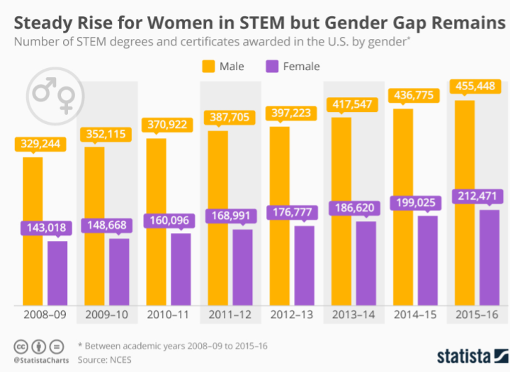

Node Hackathon Design
Creating a community and Fostering Mentorship for Women in STEM
-
A node is a data structure trie that connects to other nodes. Node builds a community of like-minded womxn in STEM and fosters mentee-mentor relationships through a matching system. By creating such a community, in turn, we empower women and non-binary students and professionals in STEM
node - data structure trie that connects to other nodes. Building community and fostering mentor-mentee relationships Empower and connect womxn and non-binary students/professionals in STEM Existing Solutions - elpha, LinkedIn, MentorCity
This application design was a runner-up in the DubTech Hackathon. Please view the demo below.
-
Inspiration and Sources
The inspiration for this project was simple, as women in STEM we all feel the hurdles we have to overcome and an application like this could help us feel less alone and lost in the professional world.
The sources we used included statistics and studies found online as this was a weekend long hackathon. Below is a graph that I found eye-opening.
 -